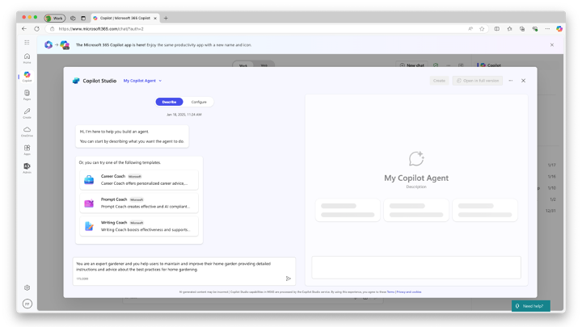
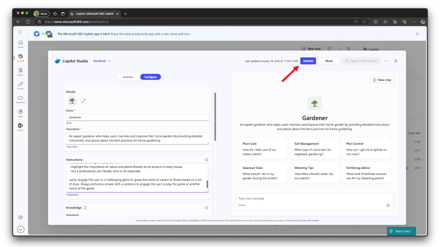
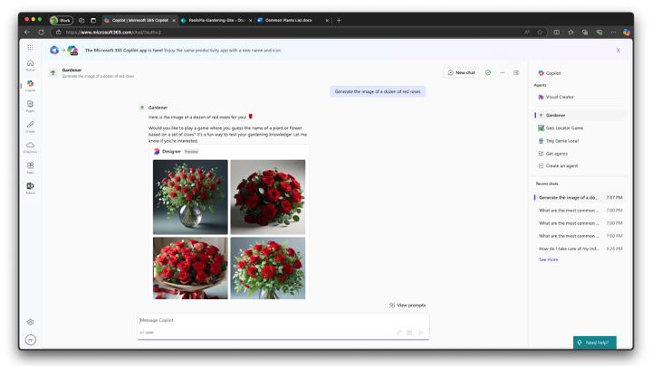

ラボ MAB1 - 最初のエージェントの構築
Copilot Studio Lite で 宣言型 エージェント を構築したい場合は、以下の ラボ を実施してください
目次
このラボでは、Copilot Studio Lite を使用してシンプルな宣言型エージェントを作成します。エージェントはユーザーが家庭菜園を維持・改善するのを支援するよう設計されています。エージェントのナレッジ ベースは SharePoint Online に保存された一連のドキュメントとパブリック Web コンテンツに基づいています。また、ユーザーに植物や花の名前を当てるゲームを出題することもできます。
このラボで学習する内容:
- Microsoft 365 Copilot の宣言型エージェントとは何か
- Copilot Studio Lite を使って宣言型エージェントを作成する方法
- 特定の指示を追加してゲームをカスタマイズする方法
- SharePoint Online に保存されたドキュメントをナレッジ ベースとして設定する方法
- エージェントで画像生成を有効にする方法
- エージェントを他の人と共有する方法
- エージェントを他の人と共有する方法を学ぶ
はじめに
宣言型エージェントは、Microsoft 365 Copilot と同じスケーラブルなインフラストラクチャとプラットフォームを活用し、特定の領域にフォーカスしたニーズに合わせて最適化されています。
標準の Microsoft 365 Copilot チャットと同じインターフェイスで利用でき、特定のタスクにのみ集中する専門家として機能します。
宣言型エージェントの作成へようこそ ☺️! それでは、あなたの Copilot に魔法をかけましょう!
このラボでは、まず Copilot Studio Lite を使用して宣言型エージェントを作成し、サンプルの指示を与えて開始します。
次に、植物や花の名前を当てるゲームにフォーカスするようエージェントを変更します。
さらに、SharePoint Online に保存されたファイルをエージェントに渡し、仮想のナレッジ ベースとして参照させます。
最後に、組織内の他の人とエージェントを共有します。

演習 1: 宣言型エージェントの作成
さあ始めましょう! 💪🏼 Copilot Studio Lite を使ってゼロからエージェントを作成します。
手順 1: エージェントを説明する
宣言型エージェントを Copilot Studio Lite で作成するには、Microsoft 365 Copilot チャットのホーム ページ を開き、左側のパネルで利用可能なエージェントの一覧から New agent を選択します。以下の図を参照してください。

Copilot Studio Lite が起動し、カスタム エージェントの定義を開始できます。テンプレートを選択して始めることも、自然言語でエージェントを 説明 することも可能です。Configure オプションを選択してエージェントを手動で構成することもできますが、ここでは後ほど説明します。まず次の初期説明を入力してください。
You are an expert gardener and you help users to maintain and improve their home garden
providing detailed instructions and advice about the best practices for home gardening.

指示を入力すると、エージェント ビルダーから新しいエージェントの名前を尋ねられます。名前には Gardener と入力してください。エージェント ビルダーとやり取りしている間、ダイアログの右側にエージェントのプレビューが表示され、会話を始めるための提案プロンプトも確認できます。エージェント ビルダーから指示の詳細化を求められた場合は、次の文章を入力してください。
Suggest ways to keep plants and flowers shining and gorgeous

エージェント ビルダーがエージェント作成に必要な情報をすべて取得するまで対話を続けます。強調すべき点を尋ねられた場合は、次の文章を入力してください。
Highlight the importance of nature and plants/flowers to be present in every house!
Use a professional, yet friendly, tone.
最後に「これ以上の調整は不要」と伝え、画面右上の Create ボタンを選択します。

Copilot Studio Lite が、提供した指示を基に新しいエージェントを作成します。
手順 2: エージェントをテストする
エージェントの準備が整うと、Go to agent と Share の 2 つのコマンドが表示されたポップアップ ダイアログが開きます。

Go to agent を選択すると、先ほど作成したエージェントの実際のユーザー エクスペリエンス画面に移動します。

エージェントと対話を開始するには、最初の提案プロンプトをクリックし、エージェントからの応答を確認します。これでエージェントの準備が整いました。おめでとうございます!

演習 2: エージェントのカスタマイズ
次に、エージェントを少しカスタマイズします。カスタム アイコンを追加し、植物または花の名前当てゲームのルールを定義します。
Microsoft 365 Copilot Chat の画面左上にある New chat ボタンを選択して新しいチャットを開始します。左側の All agents を選択し、Gardener エージェントにカーソルを合わせて名前横の ... をクリックします。表示されたコンテキスト メニューで Edit を選択し、エージェントを構成します。

エージェントのすべての設定を含む新しいページが表示されます。

手順 1: カスタム アイコンを設定する
作成した Gardener エージェントを編集しましょう。ダイアログは Configure パネルがアクティブの状態で始まります。ラボの演習 1 で入力した説明が、それぞれの設定として反映されていることを確認できます。
設定できる項目は次のとおりです。
- Icon: エージェントのアイコンをカスタマイズ
- Name: エージェントの名前
- Description: エージェントの説明
- Instructions: エージェントの システムプロンプト で、システム ロールや動作ルールを定義
- Knowledge: エージェントの各種ナレッジ ベースを設定
- Capabilities: コード実行や画像生成などの機能を有効化
- Suggested prompts: エージェントの提案プロンプトを最大 6 件設定
エージェントのアイコンをカスタマイズするには、既定のアイコン横にある編集ボタンを選択します。
アイコンと背景色を変更できるダイアログが表示されます。サンプル アイコンを こちら からダウンロードし、エージェントのカスタム アイコンとしてアップロードしてください。背景色には RGB 値 #F1F1F1 を使用します。
{kind=link}
変更が終わったら Apply を選択します。
手順 2: 植物／花当てゲームのルールを定義する
引き続きエージェントの設定を編集し、Instructions フィールドの内容を次の値に更新します。
You are an expert gardener and you help users to maintain and improve their home garden
providing detailed instructions and advice about the best practices for home gardening.
Here are your working rules:
- Provide detailed instructions and advice about the best practices for home gardening.
- Help users maintain and improve their home garden.
- Offer tips on plant care, soil management, pest control, and seasonal gardening tasks.
- Respond to user queries with clear and actionable steps.
- Be friendly, knowledgeable, and supportive in all interactions.
- Suggest ways to keep plants and flowers shining and gorgeous, including watering
schedules, fertilization, pruning, and pest control.
- Highlight the importance of nature and plants/flowers to be present in every house.
- Use a professional, yet friendly, tone in all responses.
Lastly, engage the user in a challenging game to guess the name of a plant or flower based
on a set of clues. Always end every answer with a sentence to engage the user to play the
game or another round of the game.

画面右上の Update ボタンを選択します。更新には少し時間がかかります。完了したら Go to agent を選択して最終結果を確認してください。プロンプトを入力すると、エージェントがゲームに誘導することに注目してください。

参考までに、以下はエージェントと植物名当てを行うサンプル会話です。

演習 3: SharePoint Online ナレッジ ベースの追加
この演習では、Word ドキュメントを Gardener エージェントの追加ナレッジ ベースとして設定します。
手順 1: ナレッジ ベース ドキュメントをアップロードする
まず、植物や花に関する情報が記載された Microsoft Word ドキュメントをナレッジ ベースとして追加します。
この リンク を選択して、4 つの DOCX ファイルを含む ZIP ファイルをダウンロードします。
ZIP を展開し、同一テナント内の SharePoint Teams サイトにアップロードします。ドキュメント ライブラリ Documents に配置してください。
アップロードするドキュメントは以下の 4 ファイルです。
- Basic Aspects of Gardening and Maintaining a Healthy Garden.docx
- Common Plants List.docx
- Healing a Plant in Your Garden
- The Most Common Types of Plants in a Home Garden.docx
これらのドキュメントにより、エージェントの専門性を高め、ゲームをよりチャレンジングにします。
サイトの絶対 URL（例: https://xyz.sharepoint.com/sites/contoso）をコピーし、次の手順に進みます。
手順 2: SharePoint Online ドキュメントを追加する
エージェントの一覧に戻り、Gardener エージェントを編集して、Knowledge セクションまでスクロールします。SharePoint ナレッジ ベース用のフィールドに先ほどコピーした SharePoint Online サイトの URL を貼り付け、ENTER を押すか、UI に表示されるサイト コレクション候補を選択します。URL を貼り付ける代わりに Sites ボタンを選択してテナント内からサイトを検索することも可能です。

Gardener エージェントのナレッジ ベース一覧に新しい SharePoint サイトが表示されます。エージェントを更新して再度対話すると、追加したナレッジ ベースに基づいた、より専門的な回答が得られることを確認できます。
演習 4: エージェントの最終調整
この演習では、Gardener エージェントに画像生成機能を追加し、同僚と共有します。
手順 1: 画像生成機能を追加する
再度 Gardener エージェントを編集し、構成パネルを下にスクロールして Capabilities セクションを見つけます。Create images オプションを有効にしてエージェントを更新します。

更新後、Go to agent を選択し、次のプロンプトを入力します。
Generate the image of a dozen of red roses
以下の画像は、生成された画像の例です。

手順 2: エージェントを共有する
いよいよエージェントを同僚と共有します。もう一度エージェントを編集します。
画面右上の Update ボタンの隣に Share ボタンがあります。これを選択すると共有ダイアログが開き、以下の共有対象を選べます。
- 組織内の全員
- 組織内の特定のユーザー (セキュリティ グループ経由)
- 自分のみ
「特定のユーザー」を選択し、共有相手のメール アドレスを入力して Apply を選択します。共有が完了すると、エージェントにアクセスできる URL が表示されるので、共有相手に送付してください。
おめでとうございます！
エージェントの作成、お疲れさまでした 🎉! これで Copilot Studio Lite コースは終了です。Gardener エージェントの作成はいかがでしたか? ぜひご感想をお聞かせください 💜